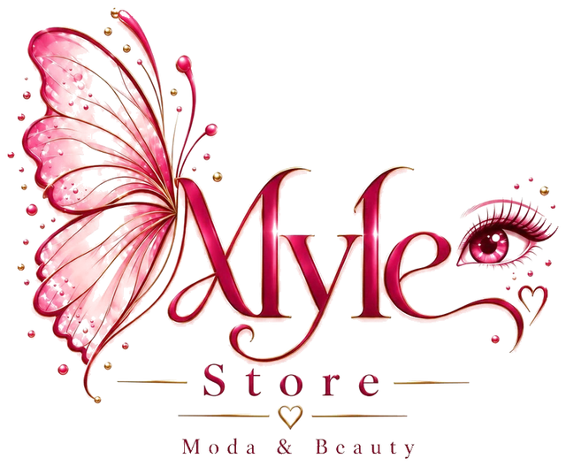

Cómo usar el sistema
Un recorrido de dos minutos con datos de ejemplo. Toque una escena para ir directo a ella.
Qué es cada cosa
- Proveedores
- A quién le compra la tienda. Se registran en Ajustes o al crear una compra.
- Compras
- Cada pedido al proveedor: cuántas prendas y cuánto se pagó. Desde la compra se registra prenda por prenda hasta completarla.
- Ingreso y serie
- Cada prenda entra con foto, cantidad, costo y precio de venta, y recibe su etiqueta MS-00001. La etiqueta se puede volver a ver e imprimir desde la ficha.
- Inventario
- Lo que hay para vender: foto, talla, color, precio y cuántas quedan. Avisa en amarillo cuando quedan pocas.
- Apartados
- El pedido de un cliente que todavía no se entrega. Al crearlo, las prendas se restan del inventario y sale la factura con los datos de depósito.
- Pagado y entregado
- Cuando el cliente paga se marca Cancelado; cuando recibe, Entregado. Si no sigue, Anular devuelve las prendas.
- Salidas
- Lo que sale sin apartado: venta directa, dañado, devolución al proveedor, regalo o ajuste de conteo.
- Movimientos
- El registro completo: compras, salidas y todo lo que entró y salió, por mes y por producto.
- Desde cualquier dispositivo
- Todo se guarda en la nube. Con el correo y la contraseña de la tienda, los mismos datos aparecen en cualquier celular o computadora.